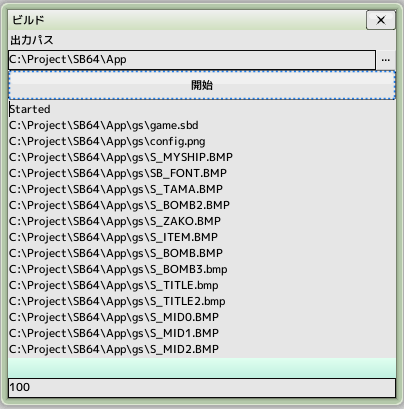

■元のページへ戻る
■元のページへ戻る

出力先のフォルダを選択した後、ビルド開始をクリックします
実行に必要なファイルは以下のファイルです。出力したフォルダへ全てコピーされます
- GAME.DAT
データファイル
ゲーム設定で出力ファイル名を指定している場合はそのファイル名になります
- GAME.BMP
スプラッシュ画像
ゲーム設定で出力ファイル名を指定している場合はそのファイル名になります
- SB_CORE.EXE
実行ファイル
ゲーム設定で出力ファイル名を指定している場合はそのファイル名になります
■ページ上部へ戻る